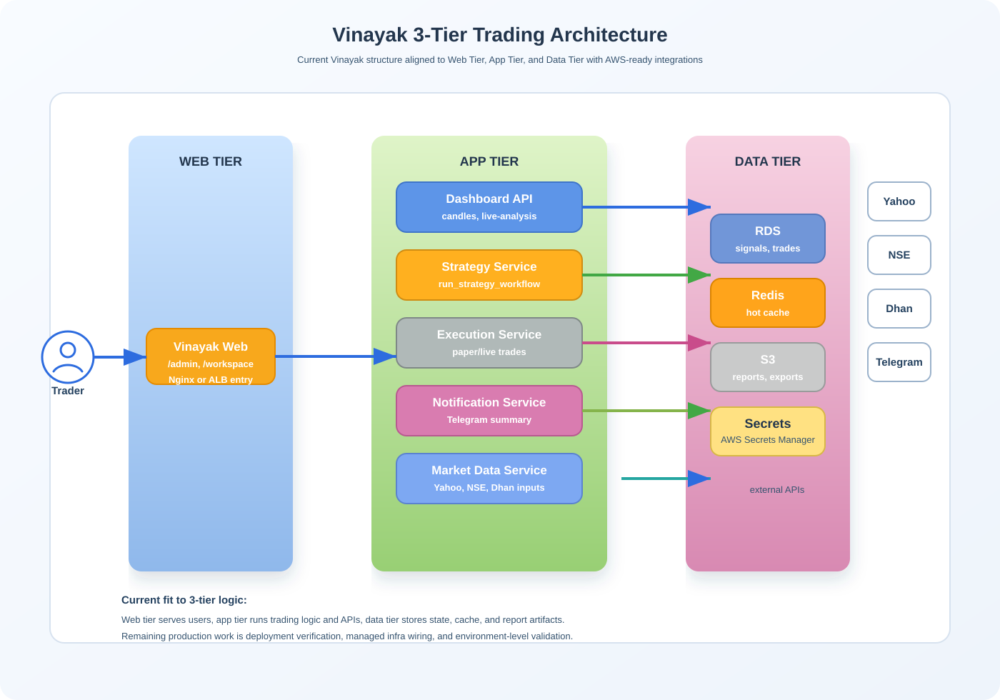

Vinayak 3-Tier Project Pack
Professional combined document pack for the Vinayak trading platform covering architecture, implementation, and production rollout flow.
Architecture Diagram
Web Tier
App Tier
Data Tier
Implementation Flow
Architecture Summary
Vinayak now behaves like a 3-tier trading platform in structure. Browser traffic is handled by the web tier, business logic runs in the app tier, and persistence plus cache plus report artifacts belong to the data tier.

Web Tier
- Admin and workspace pages
- Nginx or ALB entry point
- Public-facing only at ingress layer
App Tier
- FastAPI routes and services
- Live analysis, strategy, execution, Telegram
- Legacy Trading logic bridged into Vinayak
Data Tier
- DB-backed trading state
- Redis hot-cache for candles and artifacts
- S3 or local report storage
Production Target
- ALB + ECS Fargate
- RDS + ElastiCache + S3
- Secrets Manager + CloudWatch
Tier Implementation Steps
01 Web Tier
Install Nginx, configure reverse proxy, and expose only the web entry layer.
sudo apt update
sudo apt install nginx -y
sudo systemctl enable nginx
sudo systemctl start nginx
02 App Tier
Install the Vinayak dependencies and run the FastAPI application.
py -3 -m pip install -r vinayak/requirements.txt
py -3 -m uvicorn vinayak.api.main:app --host 0.0.0.0 --port 8000
03 Data Tier
Configure database, Redis, and report artifact storage.
REDIS_URL=redis://localhost:6379/0
REPORTS_DIR=vinayak/data/reports
REPORTS_S3_BUCKET=your-report-bucket
AWS_REGION=ap-south-1
Ordered Rollout
Step 1: Prepare compute and private networking.
Step 2: Put Nginx or ALB in front as the web tier.
Step 3: Start the Vinayak FastAPI service as the app tier.
Step 4: Connect PostgreSQL, Redis, and S3 as the data tier.
Step 5: Add deployment controls, logs, alerts, and CI/CD.
Step 6: Validate end-to-end with live analysis and report artifacts.